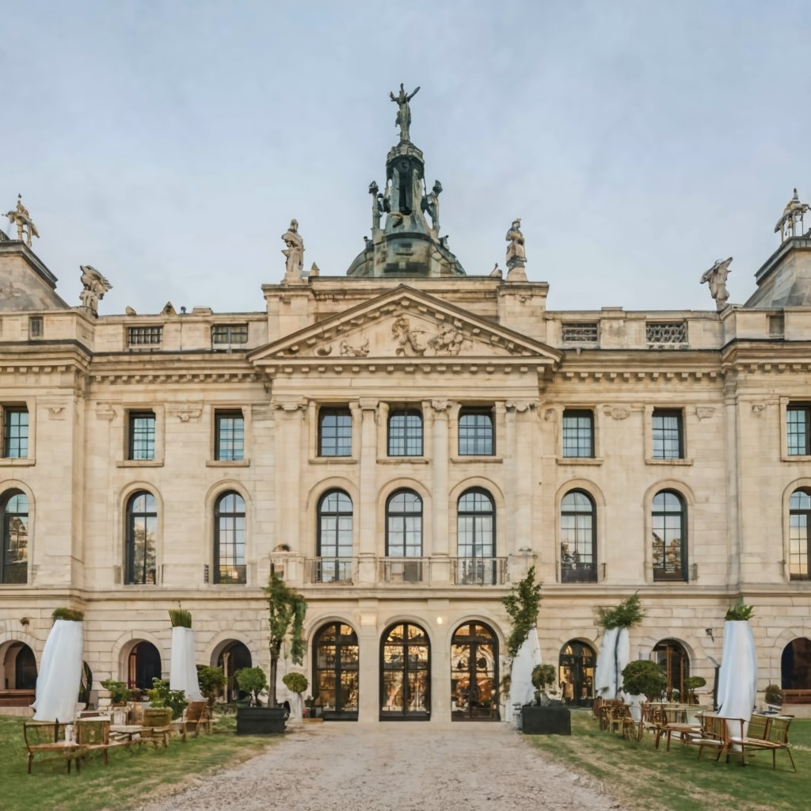
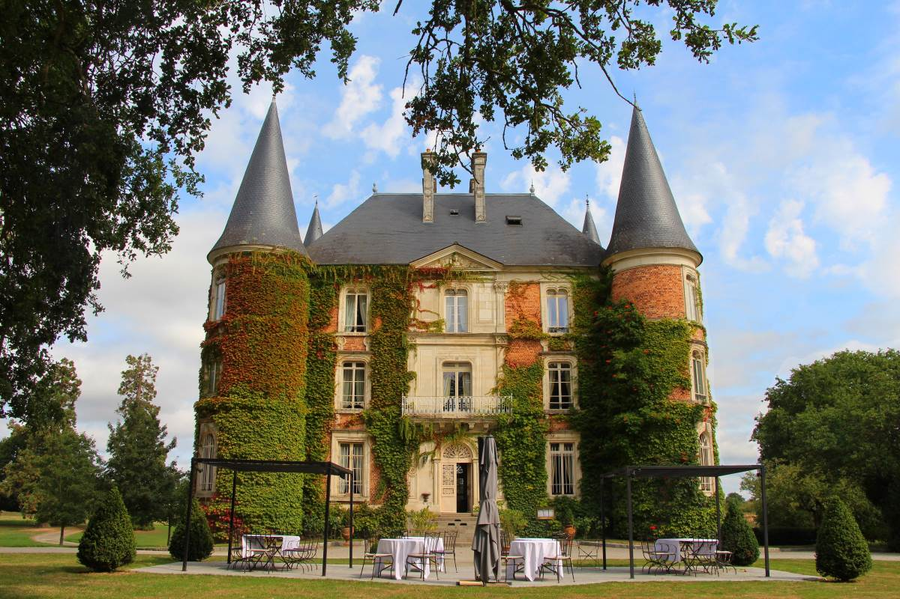

<div class="details-home">
    <div class="content my-container">
        <div class="top">
            <h2 class="title">DÉTAILS DES CÉRÉMONIES</h2>
            <p>Le week-end de nos rêves approche à grands pas. Pour marquer cet événement, nous avons prévu deux jours de célébration : une journée pour notre mariage civil et une autre pour notre mariage religieux. Ces moments uniques marqueront le début d'une nouvelle aventure, scellant ainsi notre amour et notre engagement à vie. Votre présence est précieuse pour créer des instants et souvenirs magiques et inoubliables. 💍✨</p>
            <p><b>P.S.</b> Veuillez confirmer votre présence pour chacun de ces jours en remplissant et soumettant les deux formulaires correspondants. Cela nous aidera à bien nous organiser pour cet événement spécial. </p>
        </div>

        <div class="ceremonies">
            <div class="ceremony civil">
                
                <div class="text-bloc">
                    <span class="date" data-aos="fade-up" data-aos-duration="500">24 Mai 2024</span>
                    <h3>Cérémonie Civile</h3>
                    <p>Le vendredi 24 Mai 2024 marquera le début des hostilités par notre mariage civil à la mairie de Rennes, suivi d'un vin d'honneur aux saveurs délicates et typiques de chez nous. Oui, le mangement et le boivement seront violents, venez avec un appétit vorace et ne serrez pas trop vos ceintures.</p>
                    <button data-aos="fade-up" routerLink="/confirmation-mariage-civil">
                        <span>Confirmer votre présence</span>
                        <i class="pi pi-arrow-up-right"></i>
                    </button>
                </div>
            </div>

            <div class="ceremony church">
                
                <div class="text-bloc">
                    <span class="date" data-aos="fade-up" data-aos-duration="500">25 Mai 2024</span>
                    <h3>Cérémonie Réligieuse</h3>
                    <p>Le samedi 25 mai marque la bénédiction de notre union, suivie d'une soirée dansante dédiée à la célébration de notre amour au Château d'Apigné.</p>
                    <button data-aos="fade-up" routerLink="/confirmation-mariage-religieux">
                        <span>Confirmer votre présence</span>
                        <i class="pi pi-arrow-up-right"></i>
                    </button>
                </div>
            </div>
        </div>
    </div>
</div>
